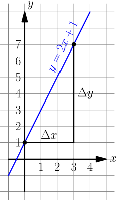
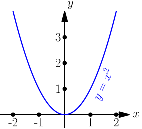
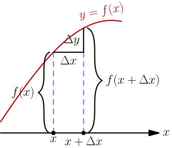
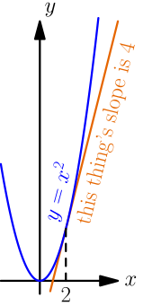

Derivatives¶
Derivatives are one of my favorite things in math. At first they seem like calculating their values will be quite complicated, but it turns out to be surprisingly easy.
Derivatives are also not useless gibberish isolated from real life. There's a practical demonstration game at the end of the chapter, and we can do all kinds of amazing other stuff with derivatives.
This chapter assumes that you know what limits are. If you have never heard of them before, I highly recommend reading the limit section in the infinity chapter first.
Slopes¶
The equation of any (non-vertical) line is of the form $y=sx+c$ where $s$ is the slope and $c$ is a constant. If you have no idea what that means, use this awesome demo thing that a friend of mine made to see how changing the constant and the slope affects the line. The equation of the line is shown in blue in the top left corner.
The $c$ constant specifies how high the line is. It's important to note what happens to the line as you change the slope; the bigger the slope, the steeper the line goes up, and a negative slope means that the line goes down instead. You can think of slope as some kind of growth rate.
A difference means how much a value changes. For example, if the value of $x$
is first 5 and then we change it to 6, $x$ changes by $\Delta x = 1$. Here
$\Delta$ is the Greek delta letter, so if someone's code has a variable named
deltax it means this.
Now choose two points from the line and imagine drawing a triangle between those points. Let's call the height of this triangle $\Delta y$ and the width $\Delta x$. Like this:

In this example I have set the constant term to 1 and slope to 2, and with these points, I get $\Delta y = 6$ and $\Delta x = 3$. Here's something interesting:
$$\begin{align}\frac{\Delta y}{\Delta x} = \frac 6 3 = 2\end{align}$$This is the slope. You can always find the slope by drawing a triangle like this and then calculating $\frac{\Delta y}{\Delta x}$. Just to convince yourself, choose another pair of points and try it again; you still get the same slope.
What is a derivative?¶
Now we know what slopes of lines are and how to calculate them, but can we calculate slopes of curves that look e.g. like this?

The problem with this is that we don't get the same $\frac{\Delta y}{\Delta x}$ ratios everywhere. You can think about $\frac{\Delta y}{\Delta x}$ as the growth rate, and as you can see in the above graph, the values of $x^2$ grow at different rates in different places. For example, the slope seems to be $0$ at $x=0$ and something positive when $x$ is positive.
Maybe we could calculate the slope with a very small triangle?
We can calculate the exact slope at a point with a limit like $\displaystyle\lim_{\Delta x\to0} \textstyle\frac{\Delta y}{\Delta x}$. This limit is known as the derivative.
Let's find a formula for calculating derivatives. We'll do this for a general $y=f(x)$ graph where $f$ is a function instead of $y=x^2$, so we'll get something that is not limited to just $x^2$.
<theelous3> so the height of x, or x's "y", can be described as
f(x), where f = lambda x: x**2

There are quite a few things going on in the above drawing. Make sure that you fully understand it before moving on.
If we look at the length of the $f(x+\Delta x)$ line and take off the length of the $f(x)$ line, we're left with $\Delta y$. So $f(x+\Delta x)-f(x)=\Delta y$. Let's plug this into our definition of derivative:
$$\begin{align}\lim_{\Delta x\to0} \frac{\Delta y}{\Delta x} = \lim_{\Delta x\to0} \frac{f(x+\Delta x)-f(x)}{\Delta x}\end{align}$$Finally we'll replace $\Delta x$ with $h$ just to make this formula less annoying to use. This is especially true for writing by hand because we can't just copy/paste $\Delta x$ everywhere.
$$\begin{align}\lim_{\Delta x\to0} \frac{\Delta y}{\Delta x} = \lim_{h\to0} \frac{f(x+h)-f(x)}{h}\end{align}$$Handy thing: $(x+h)^2=x^2+2xh+h^2$
Proof using $(a+b)c=ac+bc$:
$$\begin{align}& \ (x+h)^2 \\ =&\ (x+h)(x+h) \\ =&\ x(x+h)+h(x+h) \\ =&\ xx+xh+hx+hh \\ =&\ x^2+2xh+h^2\end{align}$$Now we can set $f(x)=x^2$ and see what we get.
$$\begin{align}\lim_{\Delta x\to0} \frac{\Delta y}{\Delta x} &= \lim_{h\to0} \frac{f(x+h)-f(x)}{h} \\ &= \lim_{h\to0} \frac{(x+h)^2-x^2}{h} \\ &= \lim_{h\to0} \frac{\rcancel{x^2} + 2xh + h^2 \rcancel{- x^2}}{h} \\ &= \lim_{h\to0} \frac{2xh + h^2}{h} \\ &= \lim_{h\to0} \frac{(2x+h)\rcancel h}{\rcancel h} \\ &= \lim_{h\to0} \frac{2x+h}{1} \\ &= \lim_{h\to0} (2x+h) \\ &= 2x\end{align}$$<Akuli> so it's 2x
<Akuli> boom
<theelous3> oh shit
<Akuli> lol
<Akuli> i think this is cool
<theelous3> lmao, that's kinda awesome
<Akuli> right :) yeah
We started with a complicated-looking thing but finally we arrived at just $2x$. What's more, the $2x$ is not just a random value we got out of a spooky calculation; for example, at $x=2$ the derivative is $2 \cdot 2 = 4$, so if we draw a straight line that barely touches $y=x^2$ at $x=2$ its slope will also be 4. Like this:

Exercise
Find the derivative of $x^3$.
Earlier we looked at the line $y=2x+1$ and we got the slope 2 from any $\frac{\Delta y}{\Delta x}$ ratio, but derivatives are $\displaystyle\lim_{\Delta x\to0} \textstyle\frac{\Delta y}{\Delta x}$, so the derivative of $2x+1$ should be 2. Let's see if that works:
$$\begin{align}y = f(x) = 2x+1\end{align}$$$$\begin{align}\lim_{\Delta x\to0} \frac{\Delta y}{\Delta x} &= \lim_{h\to0} \frac{f(x+h)-f(x)}{h} \\ &= \lim_{h\to0} \frac{(2(x+h)+1)-(2x+1)}{h} \\ &= \lim_{h\to0} \frac{2(x+h)\rcancel{+1}-2x\rcancel{-1}}{h} \\ &= \lim_{h\to0} \frac{\rcancel{2x}+2h\rcancel{-2x}}{h} \\ &= \lim_{h\to0} \frac{2\rcancel h}{\rcancel h} \\ &= 2\end{align}$$Note how $x$ disappeared: the derivative of $x^2$ is $2x$, but the derivative of $2x+1$ is $2$ without any $x$. In other words, the derivative of $2x+1$ is the same with any $x$ value. This makes sense because straight lines have the same slope everywhere.
Exercise
Prove that the derivative of $sx+c$ is always $s$. Here $s$ and $c$ are constants.
This stuff is in a red box just to make sure that you read it.
The derivative $\displaystyle\lim_{\Delta x\to0} \textstyle\frac{\Delta y}{\Delta x}$ is often written as $\frac{dy}{dx}$. Historically $dy$ and $dx$ were infinitely tiny changes of $y$ and $x$, but nowadays limits are preferred over "infinitely small numbers".
It's also common to write $\frac{d}{dx} y$ instead of $\frac{dy}{dx}$, although it doesn't make much sense because $dy$ doesn't mean $d$ times $y$. Another common style is to put a single quote after a function name, like $f'(x) = \frac{d}{dx} f(x)$.
Sometimes programmers write dy when they really mean deltay.
It doesn't make sense either, but dy is much less typing than
deltay.
Faster!¶
Let's say that you want to calculate something like this:
$$\begin{align}\frac{d}{dx} (6x^2+7x-123)\end{align}$$That would be a horribly complicated calculation with the definition of derivative. In these cases, we can use some handy-dandy rules:
- If we have a bunch of things added or substracted from each other we can find the derivatives of each thing one by one.
- You can move constants to the front of the $\frac{d}{dx}$. This works only with constants; you cannot move anything with $x$ in it to the front.
- Derivative of $x^2$ is $2x$.
- The derivative of $x$ is 1.
- The derivative of any constant (e.g. 3) is $0$.
That's quite a few rules, but they make this handy:
$$\begin{align}& \frac{d}{dx} (6x^2+7x-123) \\ =& \frac{d}{dx}(6x^2) + \frac{d}{dx}(7x) - \frac{d}{dx}(123) \\ =& 6 \cdot \frac{d}{dx}(x^2) + 7 \cdot \frac{d}{dx} x - 0 \\ =& 6 \cdot 2x + 7 \cdot 1 \\ =& 12x + 7\end{align}$$Don't believe these rules just because I say that they work; in the next chapter we'll prove that they work.
You can also use a nice symbolic calculation library, like Python's sympy (can be installed with pip):
>>> from sympy import *
>>> init_printing()
>>> x = Symbol('x')
>>> diff(x**2, x)
2⋅x
>>> diff(6 * x**2 + 7*x - 123, x)
12⋅x + 7
Here "diff" is short for "differentiate", and it means finding a derivative.
<Akuli> theelous3, >>> diff(x**2)
<theelous3> that is nice
<theelous3> oh :P
<theelous3> nice
<Akuli> yeah
<Akuli> hmm
<Akuli> i expected you to be like oh shit why did we do all this by hand
<theelous3> nah
<theelous3> would learn nothing just doing this
Chain Rule¶
This is a separate section just because it's easy to forget using this derivative rule.
For example, let's say that we want to find the derivative of $(2x)^2$:
$$\begin{align}\frac{d}{dx}\bigl((2x)^2\bigr) \mathop{=}^{\red ?} 2(2x) = 4x\end{align}$$I put a red ? over the equal sign because we used the $\frac{d}{dx}x^2=2x$ rule when the inside was $2x$ instead of $x$. We aren't sure if we can do that just yet, and we actually get a different result if we start by using the $(ab)^2=a^2b^2$ rule from the basics page:
$$\begin{align}(2x)^2 = 2^2x^2 = 4x^2\end{align}$$$$\begin{align}\frac{d}{dx}\bigl((2x)^2\bigr)=\frac{d}{dx}(4x^2)=4\cdot\frac{d}{dx}(x^2)=4\cdot2x=8x\end{align}$$This solution must be correct because we know that each part of it is correct.
When stuff is nested like this we don't necessarily need to expand everything; it's enough to multiply by the derivative of the inner stuff:
$$\begin{align}\frac{d}{dx}\bigl((\underbrace{2x}_{\substack{\text{inner} \\ \text{stuff}}})^2\bigr) =2(2x) \cdot \underbrace{\frac{d}{dx}(2x)}_{\substack{\text{derivative of} \\ \text{inner stuff}}} =4x \cdot 2 = 8x\end{align}$$This is known as the chain rule, and it looks like this in a mathy $f$ and $g$ form:
$$\begin{align}\frac{d}{dx}f(g(x))=f'(g(x)) \cdot g'(x)\end{align}$$Use it every time you have inside stuff other than $x$.
Example: Smooth Jumps¶
Let's say you're making a game where a player can jump over something. If the player moves right at a steady speed, which of these jumps looks best?
The answer is obvious – the rightmost jump looks best. It's time to figure out how to make games with jumps like that.
Let's say that $t$ is time and $h$ is the height of our player, so we get this graph:
This graph looks like a parabola, so its equation is $h=at^2+bt+c$ where $a$, $b$ and $c$ are constants. The changing rate of height is the falling speed. Let's call that $v$ like velocity.
$$\begin{align}v = \frac{dh}{dt} = \frac{d}{dt} (at^2+bt+c) = 2at+b\end{align}$$On the other hand, the changing rate of velocity is the acceleration caused by gravity. Let's call that $g$.
$$\begin{align}g = \frac{dv}{dt} = \frac{d}{dt} (2at+b) = 2a\end{align}$$Note how the $t$ disappeared and we're left with just the constant $2a$. This makes sense because the gravity is always the same, no matter what time it is.
This Python program...
height = 0
velocity = 10
gravity = 2
while height >= 0:
print(' '*height + 'O')
height += velocity
velocity -= gravity
...prints this awesome parabola:
O
O
O
O
O
O
O
O
O
O
O
O
You can use similar code for doing jumps in games. Here's a demo created with my canvaswrapper.js script. Click it and use arrow keys to move the ball.
Here's the code:
var screen = new CanvasWrapper('canvas1');
const GRAVITY = 1.5;
var ball = {
x: screen.width/2, // centered
height: 0, // distance from bottom of screen to ball's bottom
velocity: 0, // positive means up
velocityMax: 30, // velocity immediately after a jump
sidewayMovement: 0, // -1 is left, +1 right
sidewaySpeed: 10,
radius: 30,
};
runRepeatedly(function() {
screen.fill('black');
screen.drawCircle(ball.x, screen.height-ball.height-ball.radius,
ball.radius, 'white');
ball.x += ball.sidewayMovement * ball.sidewaySpeed;
ball.height += ball.velocity;
ball.velocity -= GRAVITY;
if (ball.height < 0) {
// ball hits the ground
ball.height = 0;
ball.velocity = 0;
}
screen.getEvents().forEach(evt => {
if (evt.type == 'keydown') {
if (evt.key == 'ArrowLeft') {
ball.sidewayMovement = -1;
} else if (evt.key == 'ArrowRight') {
ball.sidewayMovement = 1;
} else if (evt.key == 'ArrowUp') {
ball.velocity = ball.velocityMax;
}
} else if (evt.type == 'keyup' && (
(evt.key == 'ArrowLeft' && ball.sidewayMovement == -1) ||
(evt.key == 'ArrowRight' && ball.sidewayMovement == 1))) {
// cancel the previous ArrowLeft or ArrowRight press
ball.sidewayMovement = 0;
}
});
});
Some History¶
Newton and Leibniz discovered this derivative stuff independently, and they didn't exactly agree about which of them had invented it first. The word "derivative" probably refers to how derivatives can be easily derived for most functions like in the example above, but this comic suggests that it refers to Leibniz deriving Newton's work:

The comic comes from https://xkcd.com/626/.
Speaking of Leibniz and Newton, our $\frac{dy}{dx}$ derivative notation is the notation that Leibniz used, and known as Leibniz's notation. Newton used multiple different notations, including a dot on top of the function like $\dot f$. The $f'$ notation comes from yet another guy called Lagrange.
More about theelous3¶
This chapter contains a few bits of an old conversation with me and theelous3 I found from my IRC logs. I enjoyed reading it afterwards a lot; it's nice to teach people stuff that I find fun, and it's awesome when the learner also enjoys it.
Even though math and programming are separate things and you need very little math for programming, some concepts he had learned from Python helped him understand math stuff.
theelous3 wasn't very confident at first...
<darkf> Are we doing calculus
<Akuli> darkf, theelous3 is learning what a derivative is
<theelous3> darkf: we're improving my 8 year old's math skills
...and he struggled with stuff that was very easy to me...
<theelous3> (x**2 + 2hx + h**2) - x**2 / h
<theelous3> ?
<Akuli> theelous3, great you're making progress :D
<Akuli> theelous3 learns fast
<Akuli> theelous3, keep tidying it and try to get rid of the /h
<theelous3> idk how to do that, but I'll wing it
<Akuli> ok :)
<Akuli> you can start by removing the parentheses
...but he learned stuff surprisingly fast, and he enjoyed it.
<theelous3> yeah I figured I can just get rid of the x**2's
<Akuli> theelous3, great
<Akuli> thats exactly what you're supposed to do
<theelous3> 2hx + h**2 / h
....
<theelous3> I had math fun for the first time ever
Click here to read the next derivative chapter.